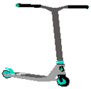
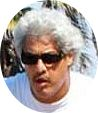
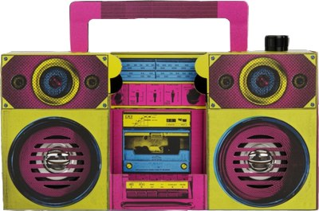

I beg to report to you that some functionalities of this site need javascript activated, and HTML5
432hz SCOOTWAVE
Desde Covid-19 año 2
Home | Entrada | Nosotros | Comentarios | Links
About | Concepto | Transcurso | Acción
ALTAS SCOOTPECTATIVAS
SCOOTCAPADA
No-budget text-based multimedia wandering

432hz ScootWave : déambulación urbana disruptiva
Así que uno se pregunta: ¿qué es exactamente lo que encarna 432hz ScootWave, esa realidad hecha vagabundeo virtual, esa gamificación de la deambulación, de la deriva urbana?
De hecho, ScootWave presenta narrativas digitales con un toque de interacción.
Consideremos esas interacciones como extensiones añadidas a las deambulaciones presentadas en este sitio, como medios para considerar esas derivas según diferentes opciones
La ciudad considerada como un telón de fondo donde se desarrollan las deambulaciones; este sitio elabora una instalación digital asociando textos, imágenes, vídeos, combinados con esas deambulaciones para producir un nuevo "objeto": un paseo digital (un paseo electrónico).
Las narraciones que presentará 432hz ScootWave son el resultado de una experiencia basada en la premisa de que el paseante construye el paisaje, que la ciudad no existe por sí misma sino según el enfoque del intelecto del paseante; intelecto a su vez construido por los recuerdos abstractos (deseos, infancia, memoria (libros leídos, películas vistas etc...)) y concretos (actividad, familia, vivienda, vida actual) del entorno del individuo que es el paseante.
Nos inspiramos en las teorías de la Deriva Urbana, más concretamente en el espíritu de los situacionistas (técnica de paso ininterrumpido por diversos ambientes). Para más información: Dérive (filosofía) ; Teoría de la Deriva de Guy Debord ; Theory of the Dérive ; Psicogeografía (estudio de las leyes exactas y los efectos precisos del entorno geográfico, consciente o inconscientemente dispuestos, que actúan directamente sobre las emociones y el comportamiento de los individuos). Les sugerimos también leer El Túnel de las Metáforas: Percepción de la Vivienda y del Entorno Urbano Como Experiencia Artística
432hz ScootWave utiliza unas herramientas del videojuego, para sumergir a sus visitantes en la realidad virtual, opciones de dirección, elección del lugar de descanso, dónde tomar un café, comer, posibilidad de "ver una foto", "mirar un vídeo", "escuchar un ambiente sonoro".
Regularmente, para llegar a la siguiente etapa del recorrido, el visitante tendrá que responder a una pregunta (cultural, geográfica, histórica, etc.); si no conoce la respuesta, puede consultar pistas.
¡Abordemos la ciudad!
Pero, antes de entrar en materia, echemos un vistazo a la siguiente página...
En esta página mostraremos el principio del desplazamiento en esos paseos electrónicos.
Unas palabras más: ¿por qué el scooter? El scooter sugiere una canoa que navega por las aceras, los caminos, su movimiento tiene la fluidez que se adapta a los meandros de nuestras líneas del deseo (Camino del deseo en Wikipedia). Pero no se trata de introspección : el rio no medita sobre los lugares por donde cruza, solo cruza.
Tal como lo recuerda y nos dice el skater Chris Yandall en su página web (en relación con el skateboard, pero aplica al monopatín) :
« ¿Alguien se acuerda de lo genial que era el "sidewalk surfing" ? Pues lo iremos recuperando. No tienes que volar 1 metro 50 en el aire o saltar por escalones de 30 metros y rieles para divertirte en un scooter. Los ollies están sobrevalorados. ¡La diversión no lo está! »
¿¡Cuándo podremos volver a "surfear" por las aceras!?

Para descubrir más, para entrar en el concepto, para sumergirse en la acción :
© Webmaster